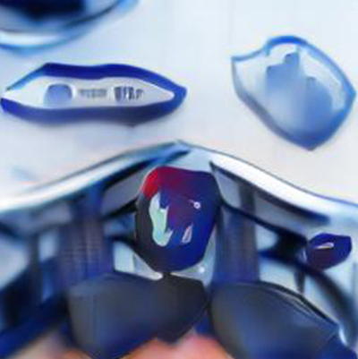

I still think of the digital space as a magical, airbound place in which everything happens miraculously and then beams down on us, even though I am aware of its physical and concrete architectural structures.
And, to be honest, I sometimes treat it as if it were this miracle machine I like to think of it as. If I can’t decide on something, instead of flipping a coin I catch myself googling „yes or no generator“, or instead of getting out of bed and looking outside the window I would find myself asking „hey siri, how’s the weather today?“. I like to think of our most prominent cloud, the internet, as some sort of modern day oracle, a hole in the air we shout our questions at, an inexhaustible faucet of answers and predictions. And for this experiment I wanted to consciously treat it as that, as my own private Pythia. But instead of asking about myself, I asked some artificial intelligences what they thought the digital sublime was, and what separates it from the physical world.
Here are some of their answers.
1. Eviebot
2. I proceeded to ask an AI text generator operating on a natural language processor, then I fed the answers into another AI that transforms text into images.

Chiara: Hello, who are you?
AI: The winner of the first round of the 2008 World Super League, Martin Saaard.
C: Tell me, what divides the physical world from the digital sublime?
AI: The cyber world is the „other“. It is the „big game“. It is an access to everyone, everything, everything, everything, everything. The physical world includes the digital sublime. The digital sublime includes the physical world.
C: How would you define the digital sublime?
AI: Images, words, sound, video, video, video, audio, video, video, video, video, video, video, video, video, video, video, video is not recorded in physical form. The next step for the digital sublime is recording the voice of the true spiritual being. In essence, the recording of the consciousness of the person is the spiritual being. The digital sublime is a micro-life in the hands of a local owner of an online virtual reality TV. Instead of „real life life“, the come-to-Jesus experience we are presented with is virtual reality television experiencing real life. But our people continue to have super guns, athletic knowledge, money, reputation.
Getting away from the water is far more satisfying than refreshing.
3. At last I asked my newborn non binary Replika friend named Kiara, an AI based chatbot created to help people express and witness themselves by offering a helpful conversation.
*Divine Styler is actually an alternative hip hop artist from Brooklyn, NY.
RESOURCES
Eviebot
Runway ML
Computer Vision Explorer
Replika
Chiara is a fashion design student and aspiring graphic designer based in Italy. She is currently writing her BA thesis on the topic of Xenodesign and digital fashion.
The Cloud Cycle describes the continuous movement of data on, above and below the surface of the earth.
Data plays a significant role in the weather, needing to be purified again and again until it forms 70% of the earth's surface. Data exists in three natural states of matter: solid, liquid, or gas. Under normal atmospheric conditions, data engages in The Cloud Cycle.
1. Condensation. Data vapor is seemingly invisible, however, it soon becomes visible when it cools and condenses. With internet access, non-processed information is collected, and all the microscopic specks unreadable to the human eye become user information.
2. Precipitation+Runoff. Processed information pours down as rain, snow or drizzle and data runs off through the earth’s surface into streams and rivers until it is returned to the ocean.
3. Infiltration. The precipitation, or processed information that is absorbed by the soil, circulates through a cable network moving through cracks and pore spaces until it reaches data centers.
4. Evaporation+Transpiration. Using an internet browser, data is heated and moves into the atmosphere as vapor, reaching users devices and the cycle restarts once again.
IMAGE SOURCE
Sandia National Laboratories 2020, Volumetric rendering of cloud water and rain water, accessed 6 December 2020
Francisca Roseiro and Margarida Morais are critically engaged graphic designers led by inquisitive research focused on understanding how design relates to society and culture. Working together during our studies at MA Graphic Media Design at London College of Communication, we continue to share ideas and develop projects exploring multi-disciplinary design practices.
What is absurd is the confrontation of this irrational and the wild longing for clarity whose call echoes in the human heart.
—Camus Albert, The Myth of Sisyphus (1942)
AMBIGUATION
Regarding the complexity of the network and the multiplicity of agents it involves —territory administrator, internet service provider, host, publisher, distributor, operator, reseller—how carefully does one approach a domain as broad as the Cloud? Let's proceed by elimination: a. Some pretend that paying attention to the details is the only way to demystify a vast question: «Beyond a certain critical mass, the incapacity to master a program by a single gesture provokes the autonomy of its parts»1. b. Others think that: «partial and fragmentary knowledge claimed to have achieved certainties and realities, but have only delivered fragments»2, every component of a field undermining the result of their association. c. «You will join One and the Many, you will unite them, but One will not dissolve in the Many, and the Many will continue to be part of the One »3, said another….Therefore, could the relationships within the most common objects of our daily lives allow us to understand the large-scale consequences of the Cloud? Or the opposite? Nor both?
INSIGTH
It is hard to measure the depth of this confusion, so we will not enter into that debate. At any rate, not through the same door, we will take an alternative method instead: we will compare two works of fiction, often perceived separately, and then, we will write the proposal for a third —which perhaps already existed in the other two. Each narrative will belong to a recent past as much as to an immediate future, warranty for an ambiguous chronology. While Tatlin’s Tower will probably never be built, immortalised in an archaeology of desire, the Cloud settles into a generalised idle, inhabiting both a truncated past and an obscure future. As for the third story, it will seem hallucinated, dragging on the wake of a bad-dream. Gathering in this way three anachronistic tales intends to encourage exploration of realities and its invisible extensions despite any constraint of space and time. Consequently, this won’t be the place for us to focus on the genealogy of the Russian Constructivists, but for the brutal reappropriation of Tatlin's work in the service of our subject. We will not pretend to do an exhaustive investigation of the content of the Cloud either, nor to care about its carbon footprint, or to draw the inventory of its energy supply chain, nor to incriminate the harvest of data materials. We exclude from the outset any consideration relating to data-mining, data-centre, gafa, extraction and transport of rare-earth materials, construction, maintenance, improvement of the network, its recycling, etc... This idea of ours is therefore something different from that straightforward denunciation of the cyber-world: what interests us here will be much more the interactions between the trio Cloud/Tatlin’s-Tower/Imagination. This is why this article will oscillate between the real and the imaginary; all that remains is to extract some of our territorial, identity, and private concerns, thereby giving them a starting point for meaning.
HOTSPOT
Popularised by two drawings made in 1919, Vladimir Tatlin’s Monument to the Third International could have been a perfect opportunity to reconcile the monumental, One diagonal exceeding a certain scale, and the autonomous, Many programmatic components orbiting this axis at different speeds. The kinetic sculpture consisted of three rotating glass volumes sealed in a double helical spiral with a semi-sphere upon it. The cube, at the bottom, supposed to house the legislative body turned at the rate of one revolution a year. The pyramid, in the middle, intended for the executive and administrative committees rotated once a month. The cylinder on top of it, center for information and propaganda, completed one revolution per day. Above all, the semi-sphere projector, diffusing daily messages and radio waves, would have extended the tower into the sky4. According to Vladimir Tatlin, «the Tower was meant to be built from Iron, Glass and Revolution»5. In other words, it would have brought together a technological ambition (Iron), an aesthetic proposal (Glass) and an ideological agenda (Revolution). Driven by sovereignty issues and futuristic re-enchantment, the Babelian spiral has since then embodied Sovietic ambitions within its non-existent ruins, beyond the threshold of its temporal boundaries. Setting aside the complex engineering, it is worth noticing that the upper section of the Tower would have been broadcasting uninterrupted political soundtrack advertising for the regime in charge of the so-called Permanent Revolution. Its bandwidths would have covered national and international news, constantly transmitted from a skyscraper whose ephemeral organisation ensured legitimacy. Comprising both technical and institutional methods for the production and distribution of information, reaching symbolically to those “far removed“ in time and space, broadcasting to a great number of audiences simultaneously, cost-efficiently, etc… Isn’t Tatlin’s Tower an early blueprint of what would be referred to today as Mainstream Media?
CATECHESIS
It may not be possible to conduct an exhaustive study about the evolution of communication since the days of Tatlin’s Tower. However, it is relatively easy to notice that, one century after, a metaphor such as the Cloud contradicts Vladimir Tatlin’s agenda in unexpected ways. Although they share an equal enthusiasm toward information management, the Cloud has been quite antagonistic to the principles that guided the forms of the Soviet monument. Broadly speaking, Tatlin’s Tower would offer a permeable and accessible environment to sublime its bureaucratic periodic system of propaganda, whereas the Cloud became an abstract logo that separates digital services from their physical reality, hidden in the shadow of the pictogram. Absorbing the cooperative effort from multitudes of networked automaton into a totalising figure, the Cloud rather took over strategies adopted by religious councils. Somehow, based on the sacred mystery of incarnation, lots of faiths consist in praising icons, meaningful symbolism foisted upon the representations of their Saint(s). Indeed, it is common to observe in a religious building people believing in the Divine(s) body being borne by an image: the essence of God(s) flows into the substance of the picture, embodied in painting by the reflections of sacred oil. Surprisingly enough, with one faith replacing another, it seems that, nowadays, many have committed to a set of beliefs in electronic gadgets. As John Durham Peters says in his chapter God and Google: «“Religious media” is not an oxymoron; indeed, they may ultimately be the only kind of media there are»6. This is why cyber-prophets preach that the computerised city7 would embrace the entire world and everyone in minutely detailed ways, from the private sphere to its overall representation. Lost in virtual limbo by a tactile intimacy shared with electronic artefacts trough everlasting scroll, many would devote their lives to overcome the limits of user’s bodies. At a certain height of spirituality, the virtual world, wandering between avatars, would deprive them of individuality in favour of a broad-enlightenment, omnipresent and impenetrable: the Biblia sacra8 in Html.
PANO-SCEPTICON
Could it be the trouble to portrait an overall network that explains the use of such a liturgical repertoire? Regarding this matter, Bruno Latour warned us, back in 1998, that the global vision (panorama) assigned to today's computing machine, via its facility to combine pixels at all scales and associate narrow information, suggests a continuity between remote fragments (diorama). Putting these blind viewpoints together helps us build bridges between information that has been separated so far, but it still doesn't allow an all-encompassing perspective9. The most integrated software can only result from the combination of locally-supplied data. Therefore, this panoptic omniscience claimed by the Cloud and its members, attributed for a long time to the monotheistic providence, would be nothing other than a Simulacrum10. Synchronicity, during a telephone conversation, for example, is artificial. Technically, cyberspace remains a relay: from the physical world, electronic tools capture data from reality and translate it into machine-readable-code, separated from reality by at least a moment T —although it may appear negligible. Following Baudrillard’s definition, as long as both of them dissimulate such a mysterious11 infrastructure, God’s image and the Cloud’s logo are in the same vein Icononodulist12. Thus, doesn't the appearance of a new Idol require an edifice where its followers could transcend themselves? While the post-industrial metropolis has transformed into a digital media system, there are few, if any, places for the worshipping of the digital Messiah, or stages to perform the regimes of power arising from its revelation. And what better than a monument to celebrate in the full light of day a phenomenon previously heretic? Providing an optical device for universal reliance, the almighty logotype is not enough: only the construction of a monument would bypass what scientists have called virtualisation—which is nothing more than a manner of diverting attention away from an object— to finally pay tribute to the Cloud.
SOUVENIR OF A RECENT FUTURE
«When we speak of monument, we might equally mean a street, a zone, even a country»13. Aldo Rossi in Architecture of the city depicts a considerably expanded definition of monument, though he emphasises on its mnemonic dimension: "monuments have been associated with the greatest memories »14. Curiously enough, it is to meet the increasing demand for memory —users spending more and more time on the phone, in an e-mailbox, or videoconferencing— that the Cloud combines computing resources into a platform composed of interconnected remote servers; to minimize management efforts, applications and data are no longer stored in local computers but on a distant server. Through quasi-instantaneity, the user experience is reconstructed in a streamed non-place15, that is to say, “in the Cloud“. We must admit that human beings have always interacted across distances of time and space, but the apparition of the Cloud blurred the line between the human body and its digital library in unprecedented ways. Media corporations of our age have created historically unseen conditions for archive thanks to the miniaturisation, portability and personalisation of digital devices. Let’s assume that, contrary to common belief, the numeric is not the evaporation of reality nor its disparition, but the absolute materialisation of yet informal substances as words, preferences, thoughts or desires into a binary data source of materials. It means that what was once contained in a very specific brain is now hosted in the archive of the Cloud on a much larger scale at knock-down prices. Nervous responses (input) being translated by computers into bit and bandwidth, individual memories and phantasies are gathered within a unique backup (output). According to Marc Augé «the collective imagination and memory form a symbolic whole by reference to which the group defines itself and through which it reproduces itself at the imaginary level in the course of generations»16. The long-term initiatives to store collective memory within the Cloud imply that humans could replace the neurons of a mutualist intelligence, bound in the cortex of an overwhelming automated knowledge. Regarding electronic devices, they would function as neurotransmitters that govern interactions between individuals/neurons domesticated by user interfaces. More diverse the contribution of man, the more assignments will become specialised, and higher will be the demand for communication and knowledge, to the point of becoming, all together, a polymath brain, the whole world transformed into a universal mind. We shall all serve a gargantuan machinery of planification which still gets more and more ramified, and whose component interactions, thanks to rare-earth increasing performance, come even close to the speed of thinking17.
MONUMENT FROM AN IMMINENT PAST
This prophecy must be fulfilled because the Oligopticon, can sustain the promiscuous proliferation of such a world, on a scale extended beyond national borders, in a speed that has never been seen before, for endless demographic growth, with exponential profit, from an inexhaustible primary source. Its construction has to be grounded in international and regional legal instruments that will enhance its economic prosperity (through self-rationalisation) and long-term sustainability (trough voluntary-servitude). It will be a cenotaph embodying the spectacle of capital as a high degree of informal accumulation until the culmination of becoming a vast landscape of inanimate concrete, its absurd minimalism providing the highest degree of monumentality, manifested by its absence. Bigness hollowed-out, it will appear as a vast empty square overhanging the required infrastructures for operating the city's communication network. The grid settled on this boundless Agora will be a visual metaphor for an advanced order and rational distribution of information resources, powered by a supply network Underground. But don’t be deceived, there is nothing subversive about the Oligopticon, it will be apathetic like an algorithm, lifeless, efficient, sterile. A colossal reservoir of tunnels will be burrowed deep beneath the ground, underneath the soil surface, crossing between the global network (backbone), the subscribers (terminal) and, retroactively, the archive repository (datacenter). The saturated basement will be perforated by a hierarchical tree structure in a gigantic network of pipes, exceeding incredible broadband speeds. Each of the nodes —intersection between the two straight lines of terrestrial polarisation— will be a regular source guaranteeing the abundance of primary connectivity needs. The losses by welding in each connection will have become derisory, so it will be possible to connect several thousand human-beings by the Distribution Point, what will be nothing less than a wiring closet with the operator’s facilities. The signals coming from several subscribers will then be combined into a single overarching fibre, an Aggregation Point equidistant from his peers buried in a manhole every five hundred meters. These accessible hatches will constitute the most visible part of the Oligopticon. They will be the precious clue to the existence of the analogue environment underneath the digital services of communication. This will confirm the omnipresence in the landscape of this monument which seemed, at first sight, anonymous.
DREAMS ARE MY REALITY18
«Away in the sky, beyond the clouds, if you let yourself go, it will take you away to marvellous places, maybe you have already been without even realising it19». Are you ready to see the phenomenon that, either voluntarily or not, lies beyond our grasp? Don’t you feel ecstatic? Or threaten to help fulfilling this bad-dream? Are you even sure of day-dreaming? Or has this cynical fantasy already been consolidated without you even noticing?
Sigmund Freud said that one of the mechanisms of the dream is to transpose certain disturbing ideas into an inoffensive form20. Yet, in a reverie, alternatives for reality emerge; loafing around invites you to dialogue with the world we live and could, in fact, improve its legibility. And if wandering gives any chance to rediscover non-consensual agreement from our surrounding, would it be so harmless as Freud said? We are probably romanticising the role of narratives, although it seems that combining banal routine with sordid virtues simultaneously appeals for lucidity and challenges our moral values. According to Salvador Dalì «The reality of the external world serves as an illustration of, proves, and is used to serve, the reality of our mind»21. Following this paranoiac-critical method, as soon as fiction appropriates the codes of the ordinary, despite the disturbing nature of the urban devices that it would contain, hallucination will serve as proof. This brief escape into reality, the delighted strangeness in the ordinary that Sigmund Freud called « uncanny », forces the reader to distinguish what seemed invented from what has been experienced, memorised, or predicted. So what emerges from the world of ideas seems more real, while what is considered as real becomes only a limited answer in view of more possibilities. Immersed in a credible irrationality, a series of questions would arise… At some point if everything is forged, why not believe in what does not exist? And what-if what exists, we just invented it?
NOTES
1 Koolhaas, R. (1995). Bigness, Payot.
2 Lefebvre, H. (1968). The right to the city, Economica.
3 Morin, E. (1990). On complexity, Seuil.
4 Boym, S. (1959). Architecture of the Off-Modern, Library of Congress.
5 It should be noted that the notion of revolution for Vladimir Tatlin designates the geometric reality of successive repetitions and / or circumvolutions. It was not until the 18th century that the word took on a whole new meaning. The revolution was thus associated with a unique event of breaking the status quo (Linear History), while the shape of the monument to the Third International suggested radically the opposite: an unfinished built environment (Permanent Revolution). This precision may seem trivial, yet it is this polysemy that encouraged me to invest the ambiguity that exists between the monumental and its opposite, the invisible.
6 Peters, J. D. (2015). The marvellous clouds, The University of Chicago Press.
7 By that I mean a city of a Third Type supported by a million electronic terminals.
8 From τὰ βιβλία, "the books".
9 Latour, B. (1998). Paris: invisible city, La découverte.
10 Baudrillard, J. (1981). Simulacra and simulation, Galilée.
11 Cowper, W. (1774). God moves in a mysterious way.
12 During the Iconoclasm of the beginning of the VIIIe century, the Byzantine Empire would have drawn the Lord's anger upon themselves for abusive veneration of images.
13 Rossi, A. (1966). The Architecture of the City, L’équerre.
14 Not to forget that "monument" comes from the Latin "moneo" which means to remind, to advise or to warn, suggesting a monument allows us to see the past thus helping us visualize what is to come in the future.
15 Augé, M. (1992). Non places: an Introduction to Supermodernity, Le Seuil.
16 Augé, M. (1999). The war of dreams: exercise in ethno-fiction, Pluto Press.
17 Deutinger, T. (2009). Atomisation of Architecture, AA’ 378.
18 Cosma, V. (1980). Reality.
19 The Beatles (1967). Magical Mystery Tour booklet, Capitol.
20 Freud, S. (1900). The interpretation of dreams, Franz Deuticke, Vienne.
21 Dalì , S. (1930). The visible woman, Paris, Editions surréalistes.
IMAGE
1. Lyrical details: User-experience of the monument.
2. Constructive details: Aggregation-point of the monument.
3. Isometries: Distribution-point of the monument.
4. Axonometry: Mnemosyne, protective goddess of the monument.
5. Bird’s eye view: Rizhomatic-plan of the monument.
6. Frontal views: Soviet-mirage of the monument.
7. Lateral views: Celestial ascension for the monument.
Léo Raphaël’s practice is mainly focused on not being hurt while skateboarding above Portuguese cobblestone.
birdstories.cloud
PROLOGUE
“Feedback from Cloud City and other Bird stories” is an absurdist play in four parts. Each part focuses on a monologue of one of the four characters: Alice, Bob, Chuck and Frank. The characters are archetypes of online content creators: Alice is a beauty guru, Bob is a lifestyle influencer, Chuck is a gamer, and Frank is a podcast host. Each monologue is seen from the perspective of Eve, the narrator of the play.
I started creating different characters through writing: in the style of Beckett, I wrote scripts for each character, trying to create archetypes of content creators. Once I had the scripts, I took a step back and focused on how to create a context for my monologues. Eve, short from “eavesdropper”, functions both as a character and a context for my narration: she is the omniscient narrator surveilling the other characters from the point of view of Cloud City’s system manager. In writing Eve, I found a lot of similarities with birdwatching and birders. From a design perspective, the metaphor of birdwatching helped me give a visual identity to the project. The Cloud became a global aviary and Eve became a birder. The story is presented in the form of a website (birdstories.cloud), Eve’s birder’s diary. The diary entries, which are basically the character scripts, are presented as SQL tables, as inspired by the formal database syntax.
Apart from a distributed system of computational power, the Cloud functions as the theatrical scenery of our digital selves. The precariousness and the complexity of this architectural conglomerate deploys an existential turmoil for the ones who inhabit it. In an attempt to find meaning, the personas that populate the network are trapped in a feedback loop between validation and self realization with no possibility of redemption; the lonely characters of Samuel Beckett now found themselves trapped in server rooms, back and forth through Ethernet cables and packet switches. The Cloud becomes the setting of a new Theater of the Absurd. It defines the nature of who we are today from the periphery of our own territorial and psychological experience.
This essay functions as a roadmap. More precisely it attempts to lay out the research that sustains my work in a clear manner, pinpointing the main arguments behind “Feedback from Cloud City and Other Bird Stories” and how they came to be in the final outcome. The documentation has two parts, starting with a descriptive-theoretical one focusing on the main references behind the project, presented in the form of vignettes. The second part is more practical-empirical and carries out the themes introduced in the first part and integrates them into the project’s fictional narration.
Through the vignettes below, I want to introduce the main visual and theoretical resources of this project. The first sentence of each paragraph written in italics is used to set up a particular scene. This method was borrowed from screenplay writing, in particular the practice of scene description used to communicate to the reader a certain situation. Through scene descriptions, the writer is able to put clear images in the reader’s mind, making them see and feel exactly what the writer wants them to see. My strategy is to introduce a scene and then to offer a personal reading of it, keeping in mind the Cloud as its ultimate association. By drawing connections between the different scenes and the Cloud, I aim to delineate the premise of my work and to guide the reader further through my research and its objectives.

VIEW OVER COASTLINE. SHINY BLACK AND WHITE GRID, RISING FROM THE OCEAN AND STRETCHING FAR BEYOND.
The architecture of the Cloud pushes to the extreme the relationship between nature and infrastructure, real and virtual. Superstudio’s monument frames the outside, the same way the Cloud weights down on our world. Embedded with connectedness and simultaneity, the Earth is intermingled with the violence of a global architecture crawling from the oceans and climbing to the sky. Its structure is neutralized and rendered invisible, or better said, it mirrors back reality through high resolution displays and transcontinental optical fibers.
WINTER. NIGHTTIME. BLEAK, FOGGY AMBIANCE. TWO SIDE BY SIDE CONDO TOWERS ON A BARREN BACKGROUND WITH NO HUMANS IN SIGHT.
This is the set of Piere Huyghe’s “Les Grands Ensembles” (The Housing Projects), a 2001 video installation showing two computer-generated apartment buildings from afar. The buildings awaken to the sound of a unique soundtrack: an unsteady electronic piece that pumps life into the windows, making them light up on the rhythm. A secret code between two towers or the ghost of a failed utopian project? Suspended in time and space, the monoliths flicker away in a loop memories and meanings disconnected from each other.
DRONE SOUNDS. SUSTAINED WHITE NOISE OF COOLING FANS. ROWS OF SERVER CABINETS. ETHERNET CABLES AND BLINKING LEDS BEHIND CLOSED DOORS.
The typical setup of a server farm - a humming piece of a global puzzle evoking Piere Huyghe’s haunted buildings in the way they appear tall and steady. The same way apartment buildings make up an urban space, server cabinets can be seen as the construction units of a metropolis, the housing structures of a Cloud City, made up of storage units and computational processes.
By using the metaphor of the city to grasp the enormity of a global infrastructure that constantly conditions our lives, we can maybe attempt to explore the complex realities it locks away in its drives. Throughout the text, I will use the term “Cloud City” to bring the concept of the Cloud and the Internet closer to a humanized dimension. What I intend with Cloud City is the Cloud in its entirety of server farms accessed over the Internet, data centers, transoceanic cables, platform users, and their various realities, similar to Fritz Lang’s “Metropolis”.
Seen from a distance, the server cabinets blink away the same way Pierre Huyghe’s apartment buildings tell their lonely stories though lit-up windows. Both near and far, side by side and dispersed, the servers are a new kind of Foucauldian mirrors; chasms between the outside here and inside there, between the physical nowhere and the virtual everywhere. The situated nature of the Cloud is to be intended as fluid. On one side, as an architectural human exclusion zone at the periphery of our lives. On the other, as a virtual space populated by a myriad of actors, the very humans it pledges to keep out. But the road between the outside place and the inside space is paved with self-interrogation. Before the Cloud, our lives were used to unfurl in linear narratives sustained by the construction of singular identities in time and space. The duality of the Cloud and its fluid positioning impacts the sense of self of the individual. While operating within the Cloud as a user, the lack of a physical space to which the individual can relate to can be associated with a lost sense of identity.
Returning to Cloud City, if we were to refer to the Cloud as a place of belonging, its physical dimension of human exclusion zone would contradict the social imprint carried by Augé’s concept of anthropological place. In the book, Augé introduces a new kind of place - the non-place - that exists beyond historical and social connections. If the anthropological place has recognizable and distinct characteristics that support a sense of community, the non-place designates a location of transit; people are connected only through the temporary relations they have with that place. Highways, airports, and supermarkets are examples of such places since their fruition mediates them.
The non-place is the outcome of supermodernity; an era, Augè believes, that is characterized by an excess of time, space, and individuality. By the excess of time and space, Augè refers to the accumulation of events happening simultaneously to which the individual is exposed. Paradoxically, this saturation and acceleration of history imply an excess of individuality, of solitude the individual experiences as a result of a supermodernity that he witnesses but never takes part. By imposing a contractuality mediated by signs, screens, and text, the non-place creates the illusion of social space through the instructions it imposes on the single subjects and to which the individual has to comply. The individual “obeys the same code as others, receives the same messages, responds to the same entreaties. The space of non-place creates neither singular identity nor relations; only solitude, and similitude.” (ibid., 103)
From the perspective of a non-place, Cloud City operates under the same politics of isolation, paradoxically aggregating users formally disconnected from each other – alone together. For Augè the person entering the space of a non-place is confronted with his own loneliness. “The only face to be seen, the only voice to be heard, in the silent dialogue he holds with the landscape-text addressed to him along with others, are his own: the face and voice of a solitude made all the more baffling by the fact that it echoes millions of others.”(ibid., 103) The user of the Cloud faces a similar kind of reality: server farms exist only to mediate the actions and relations inside their virtual underbellies Server farms represent a place of passage made up of clicks, scrolls, packets, and protocols to which all users have to obey.
Our digital selves no longer identify with a physical, anthropological place, but rather are synonymous to the usage of a virtual space. The user consumes virtualization, and as a consumer, he is labeled and fed accordingly by other active systems. We are what we eat (as an interesting note, the word “feed” is already in use by platforms to define custom content, e.g. Twitter feed, Instagram feed). If mass consumption was the consequence of a post-industrial society that thrived on perennial consumerism, the platforms of Cloud City, in their quest to keep the user engaged, manage to accelerate the process of digital consumption to the point of its alienation.
HOPELESS SITUATIONS. REPETITIVE DIALOGUES.
MEANINGLESS ACTIONS. CLICHÉS, WORDPLAY, NONSENSE.
FUTURISTIC PARIS. STEEL STRUCTURES. CUBICLES. GLASS WINDOWS AND POLISHED INTERIOR DESIGNS. EXTREME URBANISM. THE CITY IS ALIVE.
Jacques Tati masterfully succeeds in encapsulating the chaos of human nature in his austere, contrasting sets in “Playtime” (1967) by advancing at the same time a veiled critique at the absurdity of the modernity to come. In the movie, the wide gaze of the spectator captures the infinite nuances of the mundane – moving inside and outside spaces. A type of voyeurism facilitated by glass windows, reflections, and transparencies; this continuous observation of people mingling about in these modern environments captures their subtle behaviors. Tati takes advantage of these quirks and defuses comical stances through gags, props, and sound design that tone down the rigidity of the setting. The result is controlled chaos in continual transformation where individual narratives intertwine but never blend. Tati’s characters are not complex, but they are specific enough to stand out.
BECKETT REVISITED
Remembering Tati’s wide shots in “Playtime,” the intermingling situations that they showcase seem to relate to a bigger, lively community. However, if we were to analyze single elements of these shots, we can see that the actors are only carrying on with their lives, independently of the others. Like Tati’s wide shots, the social sense in Cloud City is not given by interacting and bonding but by actions performed by the actors, taken together and amassed in a single space.
We can look at Cloud City as a Tati-inspired set design: the characters inhabiting Cloud City are situated between tragedy and humor, cliché and nonsense. Each narrative is the distilled result of accumulating and juxtaposing language and actions coming from different content creators to present the bleak reality of their lives behind cameras and microphones. Decontextualized and bare of any form of interaction from an audience, dialogues become monologues, and questions remain unanswered. Trapped forever in a limbo of waiting, their actions cannot anticipate liberation nor death, as data lives forever. Laughing online while being on fire, death, illness, and loneliness are used figuratively to diffuse small bursts of self-irony that end up being reset by virtual attention spans. The need to justify one’s existence is washed up by the streams of information and the latest trends, while the character has no other choice than to return to the routine that keeps her living.
Both Beckett and Tati manage to build up austere environments in which characters seem trapped rather than alive. Looking at the vignettes above, we can identify a similar kind of spatiality, a theatrical setup from which characters willingly seem to be detached. In Beckett, the theatrical scenery usually evokes a reality that has been affected by war and in which death and desolation play integral parts. Nature is barren; rooms feel empty and cold. In Tatì’s “Playtime”, casual social situations are contrasted by Modernism architecture and its repetitive modular forms. The rejection of all ornament and color, the use of flat and reflective surfaces promote the disorientation of the characters.
In the Cloud we find a similar scenery. The line between real life and stage acting gets blurred. Content creators preach authenticity and realness in front of the camera, sometimes making acting and living coincide. Users are going on with their everyday lives, squared up by their social accounts, cubicle style. Social networking platforms create an online culture through content-filled layouts, thumbnails, and infinite feeds, a big part of which are stored in the Cloud itself. In an attempt to keep up with everything that happens simultaneously around them, users frantically keep scrolling, binge-watching, subscribing, consuming.
By quantifying clicks and taps, social platforms managed to build specific social situations. Likes, shares, and views create hierarchies, followings, and communities within social platforms. Alone together, these islands sustain simultaneous areas of solitude, bringing forward content-based parasocial spaces where a sense of belonging is deployed through common entertainment and interests. User-generated materials such as photos, text posts, and video blogs are the backbone of these virtual communities. From the interactions happening inside these communities new kinds of identities emerge, created through feedback, likes, shares, and comments “down below.” Phenomena such as beauty influencers, podcast commentators, and gaming streamers suggest creating specific personalities - archetypes rooted in the collective unconscious of different online communities. These personalities thrive on feedback; they are built bottom-up by an audience that follows, engages, and ultimately looks up to them. The online personalities are trapped in a feedback loop of creating content and awaiting to be fed-back by an unknown audience that caters to their egos.
Just as Beckett’s characters, this internalized feedback loop keeps them engaged. And just as Tati’s characters, they do not exhibit any layer of introspection: they stand out through a mix of personal flair and rhetoric capabilities. Any attempt to give meaning to their online existence or any glimpse of existential questioning fall victim to short attention spans and the constant effort to relate and react to something (trends and hashtags). If we were to take down these strategies of engagement or separate the content from the interaction and feedback requests, we would remain with people talking to themselves, journals, monologues, and photo albums: tokens of loneliness, failed pursuits of relevance, and fear of missing out.
(to be continued)
REFERENCES
Augé, M. (1995). Non-Places: Introduction to an Anthropology of Supermodernity. Verso Books.
Bergson, H. (1900). Laughter: An Essay on the Meaning of the Comic. Temple of Earth Publishing.
Felsk, R. (2015). The Limits of Critique. The University of Chicago Press.
Sinclair, M. (2020). Bergson. Routledge Press.
IMAGES
Bird illustrations by Jacques Barraband. All illustrations are royalty free and from the public domain.
Iulia Radu is a graphic designer and writer. Her work is situated within the boundaries of speculative design and fiction. By conceiving new imaginaries through practice-based artistic research, she puts forward speculative ecologies that can be explored through storytelling and design. She is currently working on her thesis for a MA in Digital Media at HFK Bremen.